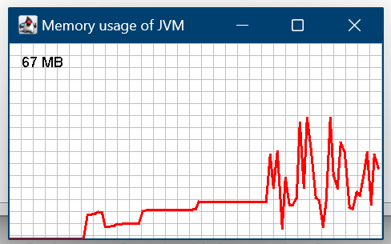

Monitor the JVM's Memory using the Memory Viewer (SPMF documentation)
This example explains how to use the SPMF Memory Viewer to monitor the memory usage of the JVM.
How to run this example?
If you are using the graphical interface of SPMF, (1) choose the "MemoryViewer" algorithm, and then (2) click "Run algorithm".
What is this tool?
The Memory Viewer is a simple tool that display the current memory usage of the JVM in a separated window.
After launching the Memory Viewer, you can keep the window of the Memory Viewer open and then run another algorithm. Then, the Memory Viewer will track the memory usage over time.
The MemoryViewer checks the memory usage every second, and keep the most recent 100 values.
Here is a picture of the memory viewer in action::

Note that this tool will only monitor the performance of algorithms that are running in the same JVM as SPMF.
Thus, if you select the option “Run in a separated process” of SPMF to run an algorithm in a separated JVM, the memory will not be monitored.